Real Estate Photography in Cape May, NJ: 14 Thistle Ln
About this Cape May listing shoot
Listing Pixl provided professional real estate photography for this Cape May, New Jersey property at 14 Thistle Ln 08204. A Cape May ranch with a white kitchen, a vaulted living room and a shaded back deck. The photos were edited and delivered ready for the MLS, Zillow, and social media.
14 Thistle Ln is a ranch in a wooded Cape May neighborhood with a covered front porch, a paver driveway and a Japanese maple out front. Inside, the shoot covered the white kitchen, the vaulted living room, the dining area, the primary bedroom and a bathroom, and the drone showed the lot and the tree cover around it.


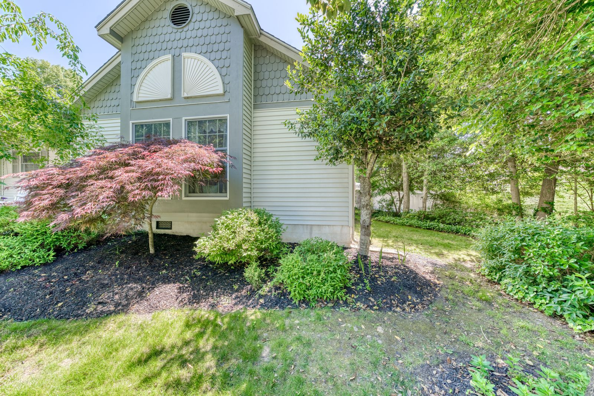

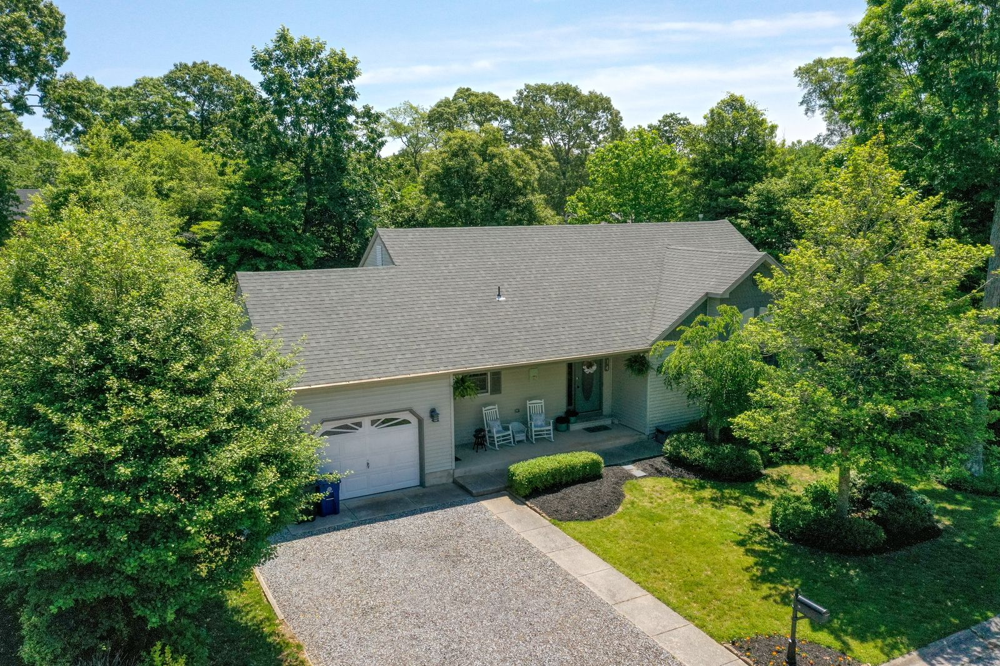

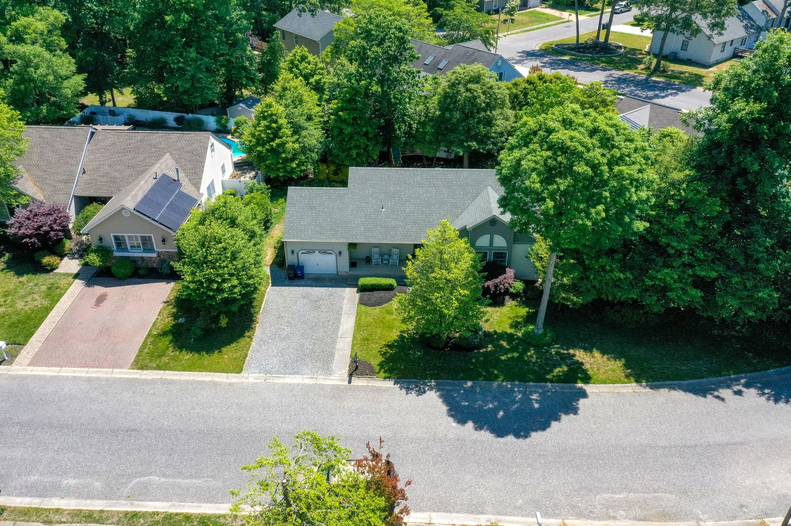

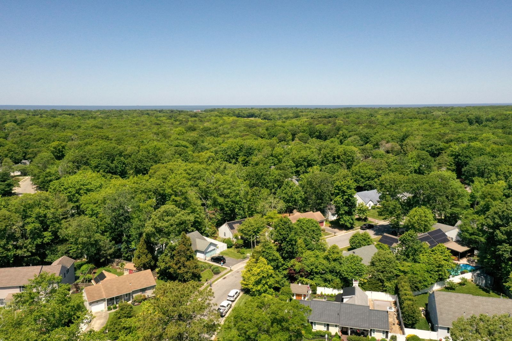

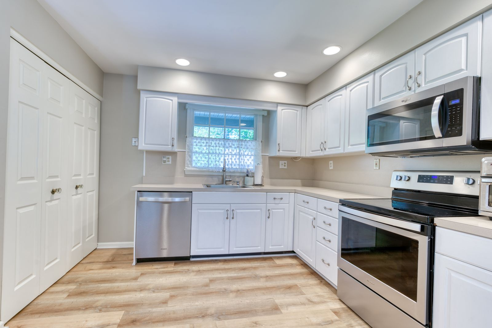

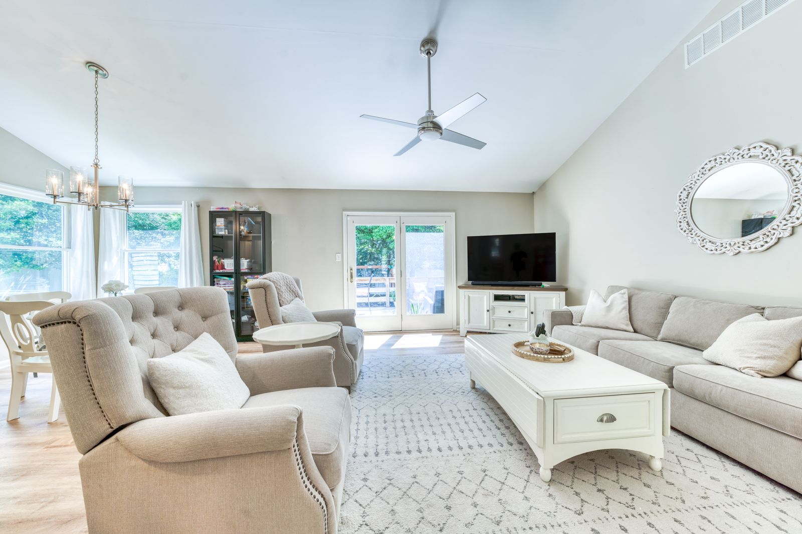

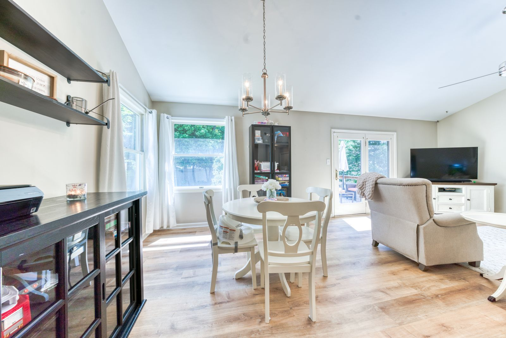

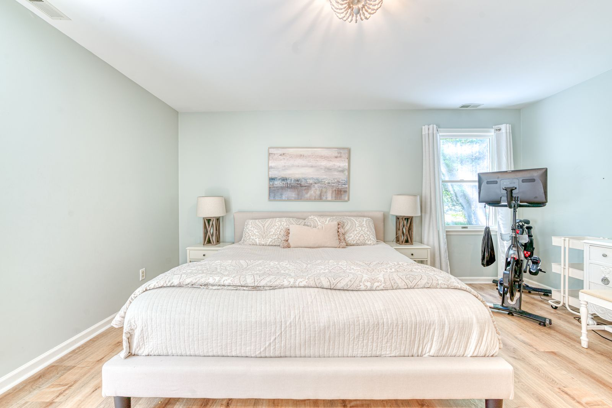

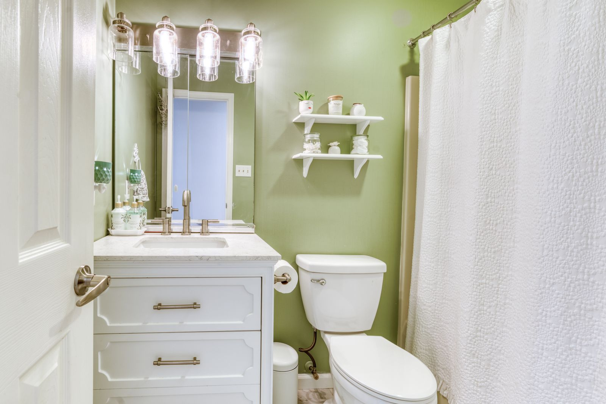

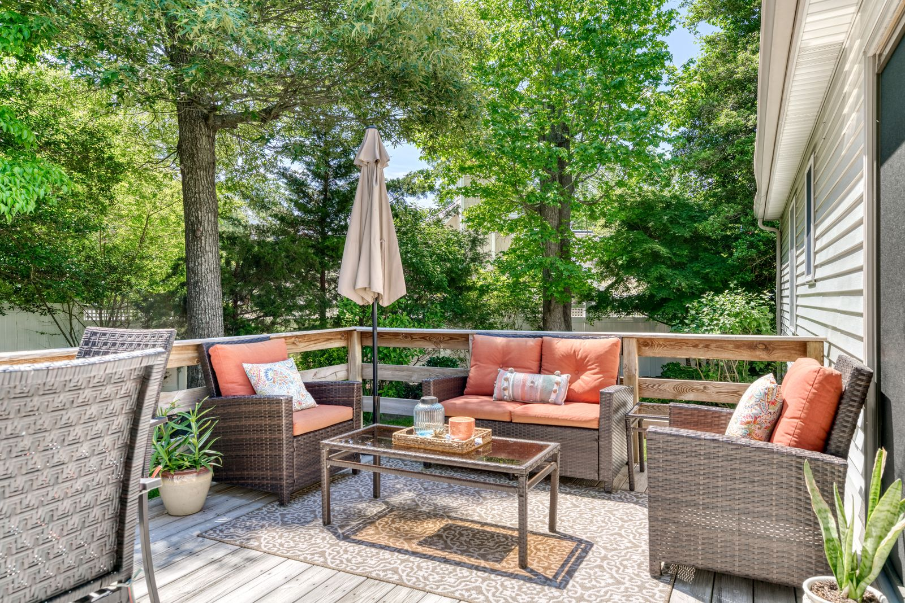

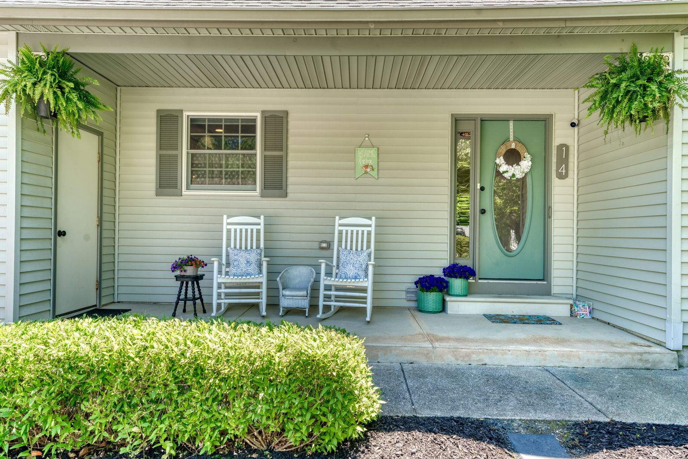
What we photographed
- Front exterior and landscaped side garden
- Drone view, top-down lot view and wide aerial
- White kitchen with stainless appliances
- Vaulted living room and dining area
- Primary bedroom, bathroom, back deck and front porch
Real estate photography services delivered
This Cape May NJ shoot included HDR listing photography with professional editing and color correction, delivered next-day and sized ready for the MLS. Drone aerial photography showed the lot, the setting, and the surrounding Cape May neighborhood — the views that make South Jersey listings stand out online.
Real estate photography in Cape May, NJ
Cape May is the southern tip of New Jersey and one of the most recognizable shore towns on the East Coast. Beyond the Victorian district, the Cape May area includes wooded neighborhoods with larger lots, where drone aerials and lot-line views help buyers understand exactly what they are getting.
See packages, FAQs and every shoot in town on our Cape May, NJ real estate photographer page.
More shoots near Cape May
Lock In a Cape May, NJ Real Estate Photographer
Selling in Cape May or anywhere in Cape May County? Listing Pixl shoots across Cape May, North Cape May, Cape May Point, West Cape May, Villas, Wildwood Crest, and surrounding South Jersey towns. Packages from $295. Call or text (609) 780-7027 or lock in your shoot online.